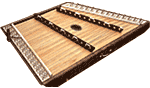
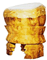
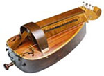

 Hammered Dulcimer : Массивная цитра с большим количеством спаренных струн, растянутых между двумя длинными ладами. Звук извлекают небольшими деревянными или бамбуковыми молоточками.Распространена на Британских островах и в Северной Америке. Hichiriki: Традиционный японский духовой инструмент со сдвоенным язычком, близкий гобою. На бамбуковом корпусе семь пальцевых отверствий и два - для больших пальцев. Концы корпуса и расстояния между отверстиями обернуты тонкими полосками коры вишни или березы. Снаружи и изнутри корпус лакируют. История хитирики начинается в периоды царствования эпох Нара и Хэйан (начало VII), когда японцы стали регулярно ездить в Китай для изучения местной культуры. Тогда же появилась музыкальная форма Гагаку, в которой хитирики стал одним из ключевых инструментов.  Huehuetl: Вертикальный барабан, сделанный из полого ствола, на трех ножках. Сверху обтянут кожей животного. В переводе - "старый человек". (Оригинальное мексиканское название до испанского завоевания - nahuatl.) |
Hurdy-gurdy: Один из старейших европейских струнных инструментов, пришедших с Востока через Византию и мусульманскую Испанию в средние века.  В России был известен под названием колесная лира. Первоначально на нем играли два исполнителя - один поворачивал покрытое канифолью деревянное колесо, которое гладило две или три струны, проходящие под аркой, другой нажимал выступы, останавливающие звучание двух или трех мелодичных струн.По форме инструмент был близок большой виоле; кроме мелодичных он имел две-четыре гудящие струны. Гудящие и мелодичные струны были очень полезны для создания полифонии и обучения гармонии. В 13 веке во Франции hurdy-gurdy был модифицирован так, чтобы на нем мог играть один человек. Инструмент стал меньше и его переименовали в chifonie/symphonia. На протяжении веков chifonie использовался равно в светской и духовной музыке. |